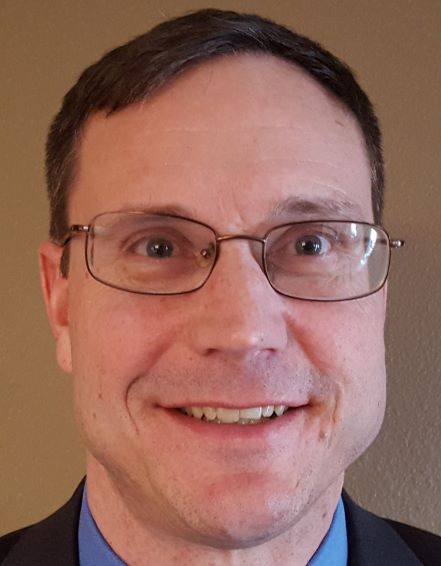

Job Experience
Pic
Background

I am originally from the Omaha area. I received my BS in Electrical Engineering from UNL. I got married while in college. We have 2 adult children that both work here in Omaha at the same
company. It is so funny to hear them complain about some random work-related meeting they both attended. Kids
are awesome. I highly recommend them. :-)
We also have two awesome dogs. We have a 9 year-old rescue greyhound (Si) and another 3 year-old rescue hound (Moose).
Moose is a scottish deer hound, and he is even bigger than our greyhound. Moose weighs in at a little over 100 lbs.
I started my career in the hardware/electrical engineering field, then developed client/server software on UNIX
systems, worked with early web-based transaction processing systems (anyone remember Netscape?), and developed fault-
tolerant, highly-available systems prior to moving into Program Management. While in Program Management, I led
multiple development contracts with large teams of systems, software, and test engineers. I also led rapid
prototyping of emergent technologies for new business development that included demonstrations of prototypes to
customers, and worked on several international projects.